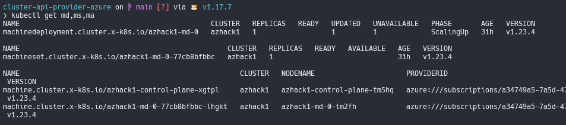
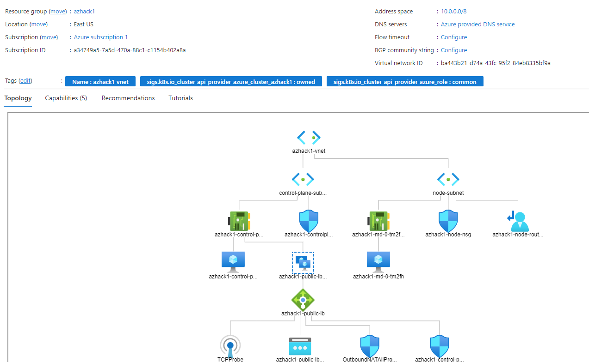

Cluster API Provider for Azure
Introduction
From the official documentation we have the original definition of Cluster API, it brings a declarative, Kubernetes-style APIs to cluster creation, configuration and management. The API itself is shared across multiple cloud providers allowing for true Azure hybrid deployments of Kubernetes.
Target Cluster Diagram
This cluster was generated using the make create-workload-cluster from the CAPZ repository.
The diagram describes the CRDs and objects created related to this Workload cluster inside Azure.

It’s possible to list the objects inside the management cluster.

List the resources from both the Cluster API and Azure provider groups.

Separation of concerns
CAPZ will manage through the controllers the assets created inside Azure. First is created a Resource Group with your cluster name on it.

Networking
Looking the vNET and subnets created on it.

As seen on CAPZ docs. When providing a vnet, it is required to also provide the two subnets that should be used for control planes and nodes.
The control-plane (apiserver) is accessible externally by a public IP load balancer by default, it’s required a few tweaks to make it private!

On the target node, check the nodes IPs, they MUST match the ones in the vnet subnets, NotReady because the cluster has no CNI installed by default!
❯ kubectl get nodes -o wide
NAME STATUS ROLES AGE VERSION INTERNAL-IP EXTERNAL-IP OS-IMAGE KERNEL-VERSION CONTAINER-RUNTIME
azhack1-control-plane-tm5hq NotReady control-plane,master 31h v1.23.4 10.0.0.4 <none> Ubuntu 20.04.3 LTS 5.11.0-1028-azure containerd://1.6.0
azhack1-md-0-tm2fh NotReady <none> 31h v1.23.4 10.1.0.4 <none> Ubuntu 20.04.3 LTS 5.11.0-1028-azure containerd://1.6.0
Scaling the VMs
The machine deployments works the same way as a Deployment object on the scale usage. New VMs are being (de)allocated
when scaled.
❯ kubectl scale machinedeployment azhack1-md-0 --replicas=3
machinedeployment.cluster.x-k8s.io/azhack1-md-0 scaled
❯ kubectl get machines
NAME CLUSTER NODENAME PROVIDERID PHASE AGE VERSION
azhack1-control-plane-xgtpl azhack1 azhack1-control-plane-tm5hq azure:///subscriptions/a34749a5-7a5d-470a-88c1-c1154b402a8a/resourceGroups/azhack1/providers/Microsoft.Compute/virtualMachines/azhack1-control-plane-tm5hq Running 31h v1.23.4
azhack1-md-0-77cb8bfbbc-bczmw azhack1 pending 12s v1.23.4
azhack1-md-0-77cb8bfbbc-lhgkt azhack1 azhack1-md-0-tm2fh azure:///subscriptions/a34749a5-7a5d-470a-88c1-c1154b402a8a/resourceGroups/azhack1/providers/Microsoft.Compute/virtualMachines/azhack1-md-0-tm2fh Running 31h v1.23.4
azhack1-md-0-77cb8bfbbc-zmrc5 azhack1 pending 12s v1.23.4